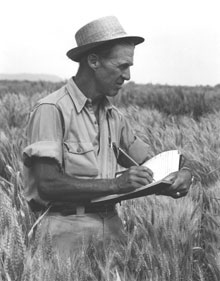

NORMAN BORLAUG
Norman Borlaug Kown as the "Father of the Green Revolution,"
Borlaug helped lay the groundwork for agricultural technological
advances that alleviated world hunger. Borlaug studied plant biology
and forestry at the University of Minnesota and earned a Ph.D. in
plant pathology there in 1942.

Norman Borlaug recording data in wheat breedingplots at Obregon
Mexico, around 2964. At that time, a legend started spreading that
he could "talk" with each plant, selected the best breeding materials.